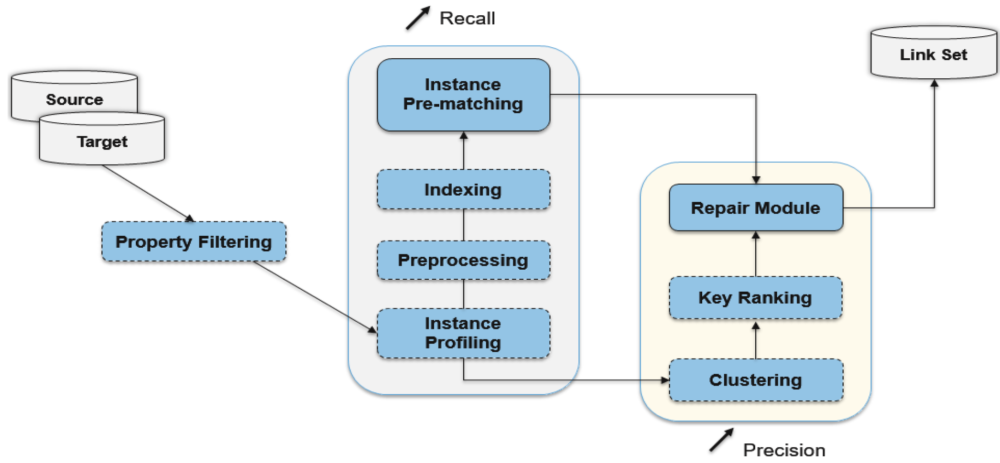
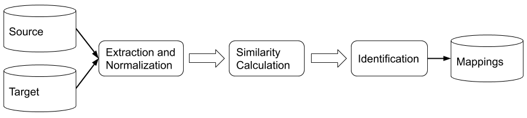

Discover new knowledge (indiscernibility of identicals)
Data integration
etc.
Related work
Legato

Related work
I-Match

Approach
Direct semantic proof
The use of properties
Approach
Direct semantic proof
Functional properties
Maximum cardinality of properties
etc.
Example
If hasFather is a functional property, (:John, hasFather,
ns1:Bill) and (:John, hasFather,
ns2:William)
then (ns1:Bill, owl:sameAs, ns2:William)
Approach
The use of properties
First intuition (weight of a role):
If 90% of the People’s instances use the role name but only 8% of those instances use the role ownerOf,
then ownerOf might help more to determine (the absence of)
an identity relation between two instances.
Approach
The use of properties
Second intuition (discriminating power of a role-value pair):
If we have 100 instances with the role-value <town, Paris> but only 3
instances with the role-value
<town, Peyrabout>, then the couple <town, Peyrabout> helps to discriminate more
instances.
Approach
The use of properties
Weight of evidence:
If x1, x2 and x3 are three instances where x1 is from the source KB and x2
and x3 are from the target KB. If
we have four evidences between x1 and x2, and eight evidences between x1 and x3 then
we give a bonus to the comparison with the more evidences to
present.
Approach
The use of properties
Depth of a concept:
If $\mathcal{KB}=dbo$
then $depth_{dbo}(Agent)=1$ and $depth_{dbo}(Biologist)=4$ since $Agent$ is a direct sub concept of
$owl{:}Thing$
and $Biologist\sqsubseteq Scientist\sqsubseteq Person\sqsubseteq Agent\sqsubseteq owl{:}Thing$.
Approach
Main algorithm
if IsSemProof(x1, x2):
return SemProofValue(x1, x2)
scores = []
C = deepest common concept between x1 and x2
for R in {common roles between x1 and x2}:
(maxSim, o) = max(R, x1, x2)
subscore = Aggregation_1(
maxSim,
(1 - WKBs(R, C)),
(1 - DKBs(C, R, o)))
scores.append(subscore)
return Aggregation_2(weight of evidence, scores)
Experiments
DBpedia and Wikidata
Our goal is to evaluate our approach on real-world datasets.
Experiments
DBpedia and Wikidata
Construction of source and target KBs
DBpedia 2016-10 and DBpedia-Wikidata 03.30.2015
From DBpedia, selection of 36 people each having at least 15 homonyms in Wikidata (rdfs:label)
Source KB contains all statements having one of this 36 people in subject or object
Target KB contains all statements having one of this homonyms in subject or object
Experiments
DBpedia and Wikidata
True positive
False positive
False Negative
Precision
Recall
F-Measure
33
3
3
0.917
0.917
0.917
The 3 false positives are the same than the false negatives
Each times the right candidates was the second one
Experiments
OAEI 2017
Our goal is to compare our approach against state of the art approaches that use
NLP techniques.
Experiments
OAEI 2017
SPIMBENCH SANDBOX: alterations of an original one
through value-based, structure-based, and semantics-aware transformations
Experiments
OAEI 2017
Participants
Precision
Recall
F-Measure
AML
0.849
1.000
0.918
I-Match
0.854
0.997
0.920
Legato
0.980
0.730
0.840
LogMap
0.938
0.763
0.841
Our approach
0.854
0.996
0.920
Experiments
OAEI 2017
Wrong candidate selection with very similar instances
Arithmetic mean
Use both KBs
Conclusion
Fully automatized instance matching approach
Based on semantics and usage of properties
Recall is good
Lack of false positive detection/correction
Explore other ways to aggregate the different scores
Refine linkset we produced to have fewer false positives results